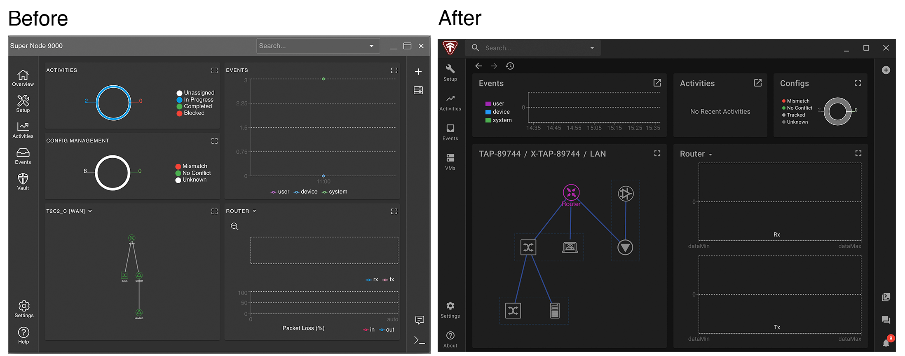
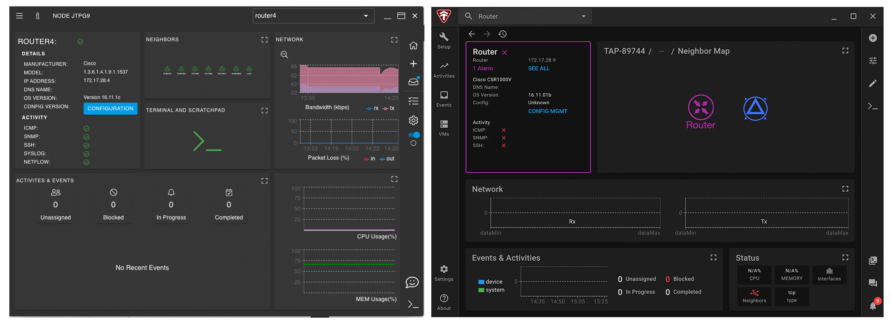
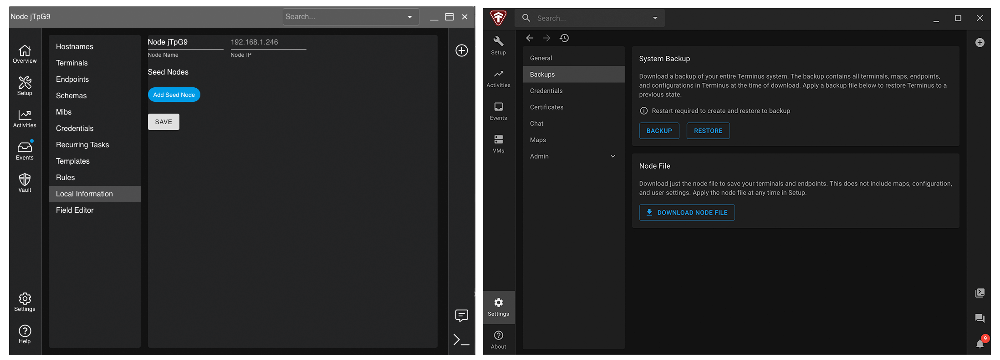
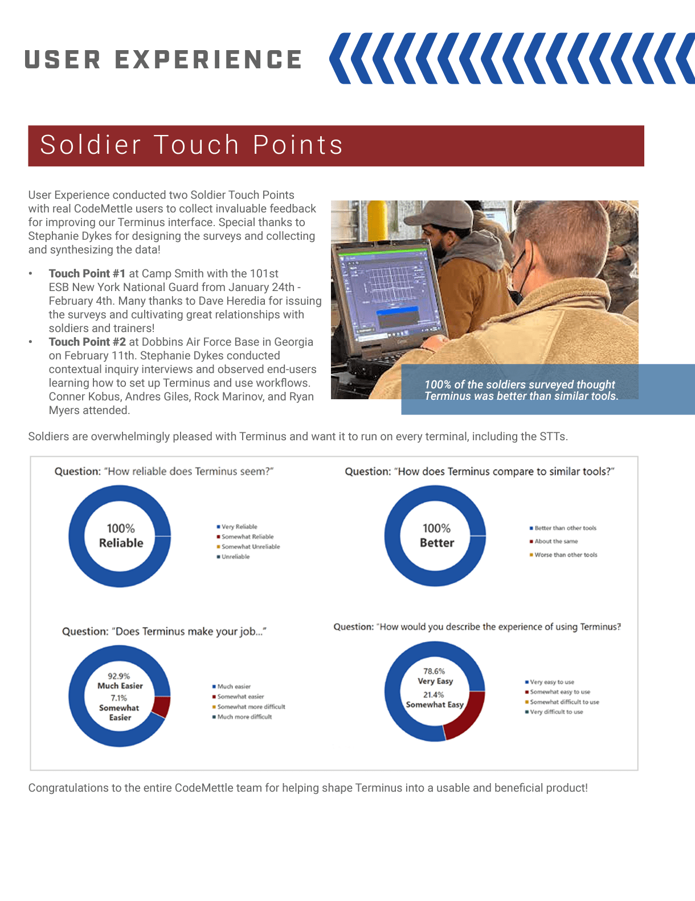

Terminus
January 2021 - August 2022

The Problem
Terminus began in a developer-driven design process. Initial lack of design involvement led to overly complex user flows, unvalidated concepts, and repetition of legacy product mistakes.
The Solution
Simplifying and honing in on Terminus's mission statement allowed for high-impact redesigns. Generating buy-in through full-team involvement created better adherence to best practices and support for design. Championing UX-driven simplicity transformed Terminus into a cutting-edge product and played a vital part in revitalizing CodeMettle's brand image.
Case Study Details
Team:
UX team of 1 to 4 over time, 4 development teams, product owner, project managerMy role:
Lead strategist, designer, researcherProcesses:
Design sprints, feature briefs, interviews, contextual inquiry, wireframes, mockups, prototyping, usability testing, affinity mapping, surveyingProcess
Starting Point
When I onboarded to Terminus, there were 2 distinct versions - the detailed yet unvalidated designs, and the developed application. Lack of communication between design and development, as well as resistance to new product and design processes, led to a large gulf between the two.
The transformation of this product began with upper management support for UX-driven processes, as well product support for this change. The real work came down to putting these processes in place, getting team buy-in, and steering the ship toward more effective designs.
{kind=link}
Revised Process
Working closely with product, new design-driven processes were put in place. Design checkoffs were made part of the acceptance criteria for Jira tickets. Sync meetings with the various development teams kept a tight loop of communication between design and development. New features started immediately with this process, redesigns occurred as time allowed, and major deliverable deadlines were successfully met.
Activitites included design sprints, feature briefs, interviews, usability testing with external participants, and design reviews. Stakeholder involvement in the design sprints generated buy-in and engagement through collaborative problem-solving. Old designs were used as inspiration for new designs, which allowed a functional blend of the current application architecture and design goals. Testing of early concepts and wireframes reduced risk, allowing developer time to be spent on validated designs.
  {kind=link}
{kind=link}
{kind=link}
The Terminus UX team started with just myself. At this time I was leading design sprints, designing mockups, and testing as time allowed. Gradually the Terminus UX team grew to 4 designers. As lead strategist, my role shifted to focus on major features, design audits, revisions, and more thorough research.
Mission Statement
"Accelerate node setup and management" was estiblished as the mission statement for Terminus, through a collaborative process that further promoted team ownership and buy-in. This statement acted as the team's guiding light for new features and value assessment. By honing in on our mission statement and focusing on our untrained user persona, Terminus was streamlined for effectiveness.
{kind=link}
Rave Reviews
Terminus transformed into the company's flagship and first design-led product, allowing CodeMettle to shift from a custom solutions company to being product-focused. This was accompanied by a company-wide brand refresh.
Several customers using CodeMettle 2.x and 3.x were upgraded to Terminus, and we took this opportunity to survey their perception of Terminus as compared to previous CodeMettle products and similar networking tools. The results were superbly positive.
{kind=link}
Reflections
Terminus's success has paved the way for UX-focused product development processes to be implemented across the company. It has demonstrated the value of design and shown that UX strategy and testing can not only turn a product around, but even help support the revitalization of company image.